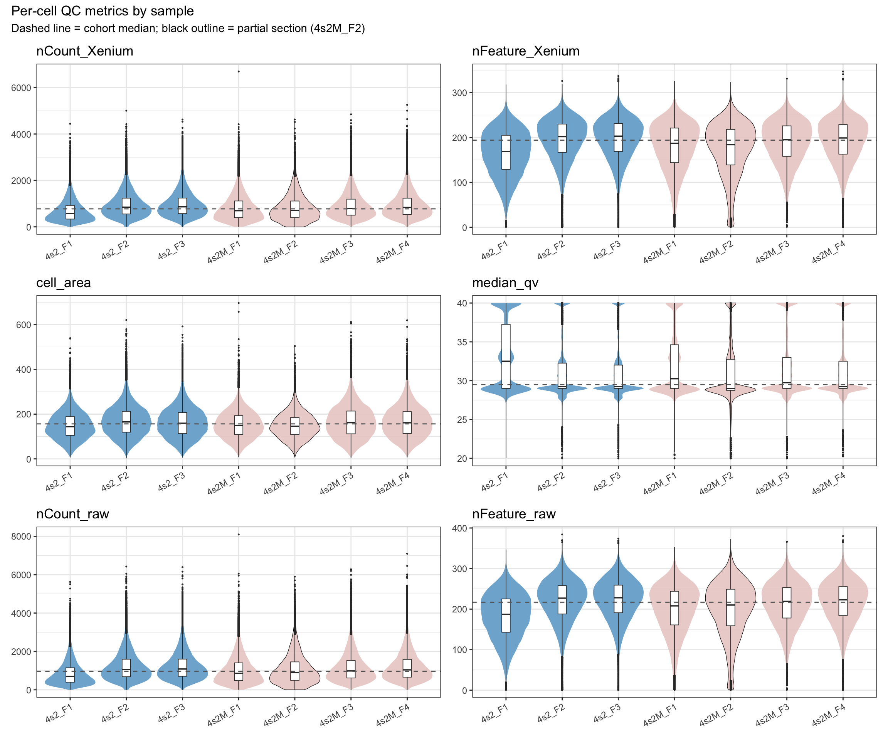
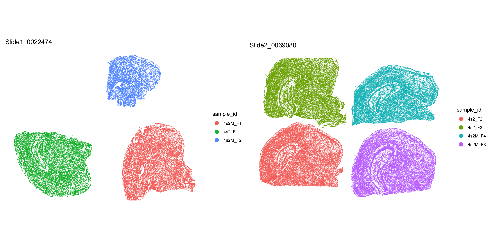
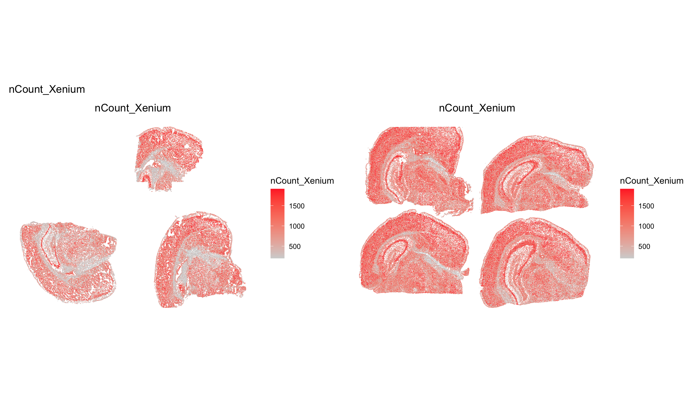
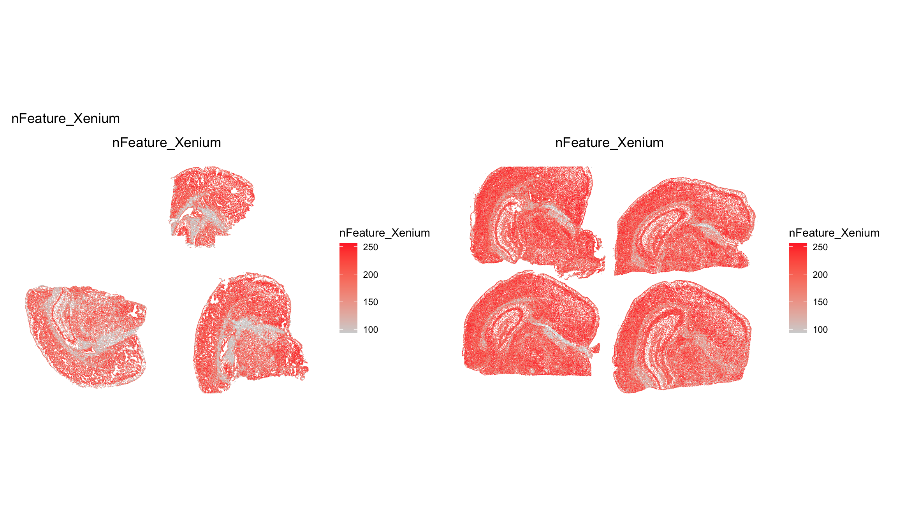
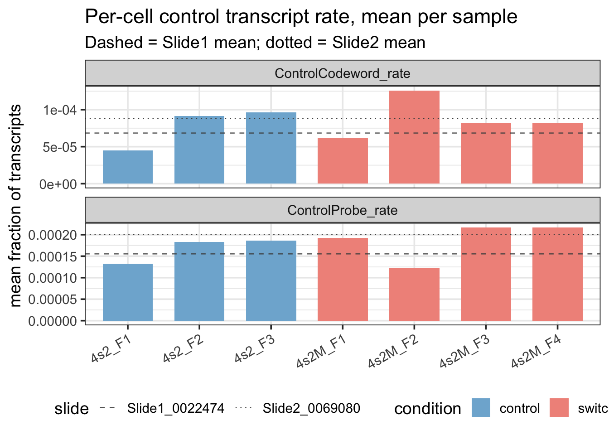
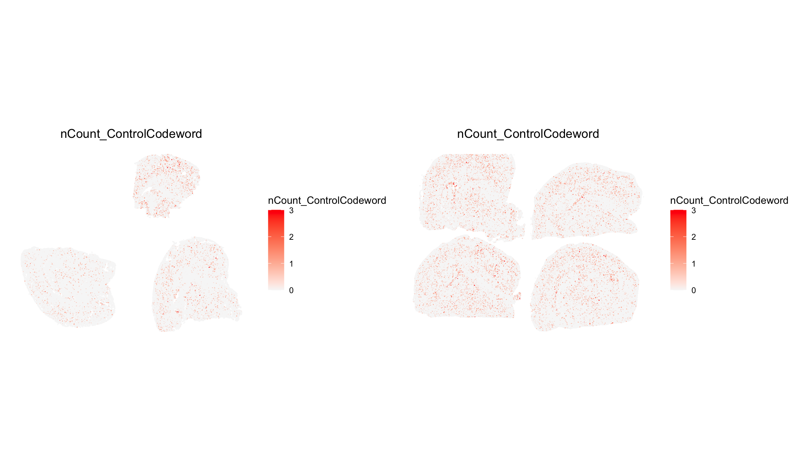
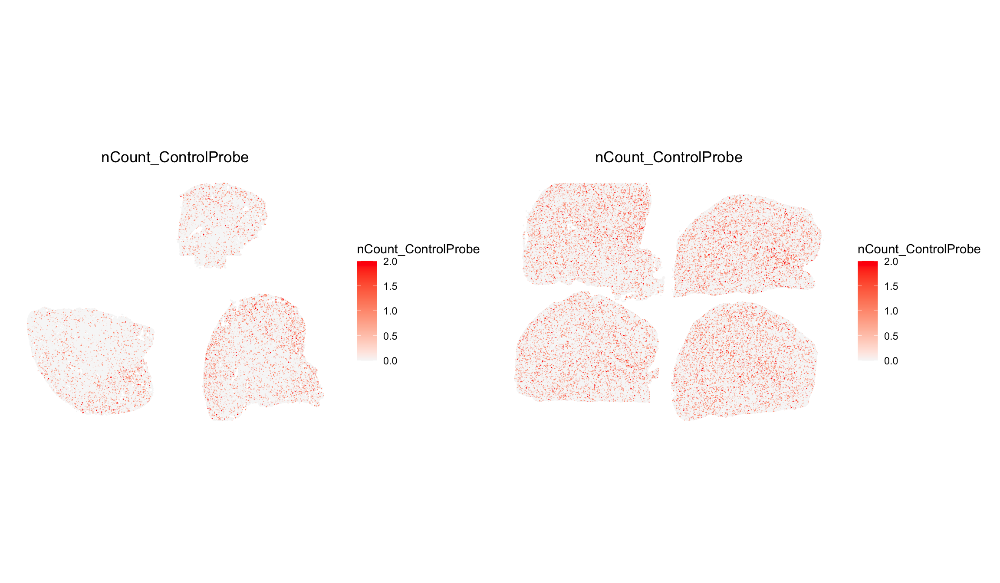

We compare slides on three layers: 1) run metadata, 2) the slide-level QC metrics that the Xenium instrument reports, and 3) the per-cell distributions on both slides.
Segmentation method.. Both slides report segmented_cell_nuc_expansion_frac = 1. Every cell on every slide is defined by a 5 micrometer dilation of the segmented nucleus. XOA has used this as the default cell definition since v2.0 (March 2024). The two XOA versions on our slides (v3.2.0.7 vs v3.3.0.1) do not differ on this nuclear-expansion path according to the public release notes.
The instrument firmware also differed across runs (v3.2.1.2 vs v3.4.1.0) and may contribute independently.
Code
# Pull the four metrics 10x reports per slide; manifest carries the run timestamp and the XOA version.read_slide_summary <-function(slide_dir, slide_label) { manifest <-read_json(path(slide_dir, "experiment.xenium")) metrics <-read_csv(path(slide_dir, "metrics_summary.csv"), show_col_types =FALSE) |>select(num_cells_detected, cells_per_100um2, fraction_transcripts_decoded_q20, fraction_transcripts_assigned, median_transcripts_per_cell, median_genes_per_cell, adjusted_negative_control_probe_rate, adjusted_negative_control_codeword_rate)tibble(slide = slide_label,analysis_sw_version = manifest$analysis_sw_version,run_start_time = manifest$run_start_time) |>bind_cols(metrics)}slide_summary <-imap(slide_dirs, read_slide_summary) |>list_rbind()
Code
# Compact run-metadata block: which samples ran on which slide, when, with which XOA version.slide_samples <- samples |>summarize(samples =paste(sample_id, collapse =", "), .by = slide)slide_meta <- slide_summary |>select(slide, run_start_time, analysis_sw_version) |>left_join(slide_samples, by ="slide")slide_meta |>gt(rowname_col ="slide") |>tab_header(title ="Run metadata") |>cols_label(run_start_time ="run start",analysis_sw_version ="XOA version",samples ="samples on slide") |>tab_options(table.font.size =px(12))
Slide2 returns 1.35-fold more cells than Slide1 (415,000 vs 307,000), but cells per 100 micrometer^2 are essentially identical (0.192 vs 0.186). Slide2 simply images a larger area of tissue.
Cells on Slide2 are richer. Median transcripts per cell rise 1.25-fold (843 vs 677) and median genes per cell rise 1.10-fold (201 vs 183). Decoder quality is unchanged (fraction_transcripts_decoded_q20 = 0.808 on both slides).
The fraction of transcripts assigned to a cell falls to 0.662 from 0.712 (ratio 0.93); more transcripts therefore sit outside the nuclear-expansion mask.
The adjusted negative-control probe rate rises 1.33-fold (0.00540 vs 0.00406).
The negative-control codeword rate is flat (ratio 0.97); the decoder false-positive rate has not changed.
Per-cell distributions across slides
We overlay the per-cell QC densities of both slides on the same axes. The dashed vertical line in each panel marks the per-slide median.
Code
# Long-form per-cell metadata; reused in this section and in Sample QC below.meta_long <- meta |>select(cell, sample_id, slide, condition, partial_section, all_of(qc_metrics)) |>pivot_longer(all_of(qc_metrics), names_to ="metric", values_to ="value")cohort_medians <- meta_long |>summarize(cohort_median =median(value, na.rm =TRUE), .by = metric)
Slide2 shifts the per-cell distributions to the right on nCount_Xenium, nFeature_Xenium, cell_area, nCount_raw, and nFeature_raw. The two slides share the same bimodal median_qv distribution, with peaks near 29 and 40; decoding quality is not differentially affected.
Sample QC
We compare the seven samples side by side on each per-cell QC metric. Control samples (E4, prefix 4s2_) sit on the left, switched samples (E2, prefix 4s2M_) on the right.
The partial section 4s2M_F2 carries a black outline; the dashed line marks the cohort median across all cells.
Code
plot_metric_by_sample <-function(metric_name) { data <- meta_long |>filter(metric == metric_name) hline <- cohort_medians |>filter(metric == metric_name) |>pull(cohort_median) data |>ggplot(aes(sample_id, value, fill = condition)) +geom_violin(scale ="width", linewidth =0.2,aes(colour = partial_section)) +geom_boxplot(width =0.15, outlier.size =0.2, fill ="white", linewidth =0.3) +geom_hline(yintercept = hline, linetype ="dashed", colour ="grey40") +scale_colour_manual(values =c(`TRUE`="black", `FALSE`=NA), guide ="none") +scale_fill_manual(values =c(control ="#7FB3D5", switched ="#e9ccc9db")) +labs(title = metric_name, x =NULL, y =NULL) +theme_bw(base_size =11) +theme(axis.text.x =element_text(angle =30, hjust =1),legend.position ="none")}wrap_plots(map(qc_metrics, plot_metric_by_sample), ncol =2) +plot_annotation(title ="Per-cell QC metrics by sample",subtitle ="Dashed line = cohort median; black outline = partial section (4s2M_F2)") +plot_layout(guides ="collect")

Distributions overlap across the seven samples for every metric. 4s2M_F2 sits inside the cohort range on every panel and shows no visual outlier behavior. The dominant structure is slide of origin: the three Slide1 samples (4s2_F1, 4s2M_F1, 4s2M_F2) sit below the four Slide2 samples on nCount_Xenium, nFeature_Xenium, and cell_area, reproducing the slide-level shift.
Sample scaled-deviation
We summarize each sample by the median of every per-cell metric, then z-score the seven sample medians against their own mean and SD.
Cells with |z| > 2 are bolded, the color scale runs from blue (low) to red (high). A z-score above zero means the sample sits above the cohort average for that metric, and vice versa.
- **4s2_F1** flagged on: median_qv: high (z = +2.13)
The z-score table confirms the visual reading. Only 4s2_F1 crosses |z| > 2, and it does so on median_qv (z = +2.13). A higher median QV means cleaner decoding.
The sign of each z-score reproduces the slide structure. Every Slide1 sample carries a negative z on nCount_Xenium, nFeature_Xenium, and cell_area; every Slide2 sample carries a positive z.
Spatial QC
We map nCount_Xenium and nFeature_Xenium onto each slide’s tissue coordinates. A reference panel above each metric panel colors cells by sample_id; the right-hand legend maps color to sample. All spatial panels use a white background so tissue-edge boundaries stay readable.
Spatial layout
After merge, LoadXenium names the slides’ FOVs fov (Slide1) and fov.2 (Slide2). Passing both to ImageFeaturePlot(fov = c("fov", "fov.2")) returns a patchwork with the two slides side by side.
Code
# Color cells by sample_id and rely on the right-hand legend to map color to sample. Overlay labels# were drifting off-tissue across Seurat versions; the legend is the reliable identifier.ref_panel <-function(fov_name, slide_name) {ImageDimPlot(xen, fov = fov_name, group.by ="sample_id", size =0.3,dark.background =FALSE) +ggtitle(slide_name) +theme(legend.position ="right")}ref_panel("fov", "Slide1_0022474") +ref_panel("fov.2", "Slide2_0069080")

Spatial nCount and nFeature
Code
# Quantile clipping (q05-q95) prevents a handful of high-count cells from flattening the gradient.ImageFeaturePlot(xen, fov =c("fov", "fov.2"),features ="nCount_Xenium",min.cutoff ="q05", max.cutoff ="q95",size =0.3, dark.background =FALSE) +plot_annotation(title ="nCount_Xenium")

Code
# Same view, gene diversity instead of total counts; nFeature saturates faster than counts and so# reflects boundary purity rather than depth.ImageFeaturePlot(xen, fov =c("fov", "fov.2"),features ="nFeature_Xenium",min.cutoff ="q05", max.cutoff ="q95",size =0.3, dark.background =FALSE) +plot_annotation(title ="nFeature_Xenium")

The Slide2 shift is uniform across all four Slide2 samples:
Per-sample medians of nCount_Xenium on Slide1 are 573 (4s2_F1), 697 (4s2M_F1), 705 (4s2M_F2), on Slide2 they are 789 (4s2M_F3), 834 (4s2M_F4), 848 (4s2_F2), 864 (4s2_F3). Every sample in Slide2 has larger nCounts than any sample in Slide1 sample, so the 1.29-fold slide-median shift is not driven by one outlier. nFeature_Xenium reproduces the same ordering with medians of 169 / 187 / 184 on Slide1 against 195 / 199 / 202 / 203 on Slide2.
The partial section 4s2M_F2 shows no per-cell density anomaly. Its nCount_Xenium median (705) and nFeature_Xenium median (184) sit within the Slide1 range; the surviving tissue behaves like the rest of Slide1.
Per-cell control rates
Each Xenium run carries two built-in negative controls.
Control codewords are barcodes that no probe in the panel can produce. If the decoder calls a control codeword, that call is a false positive. The codeword rate therefore reads out decoder noise.
Control probes are physical probes designed against non-mammalian sequences (e.g. bacterial). If a control probe lights up inside a cell, the cell either pulled in stray molecules from a neighboring cell (segmentation leakage) or the probe is non-specific. The probe rate therefore reads out segmentation and assay specificity.
10x does not publish per-cell thresholds. We report relative numbers stratified by sample and by slide. We use four metadata columns that LoadXenium auto-populates per cell: nCount_ControlCodeword, nFeature_ControlCodeword, nCount_ControlProbe, nFeature_ControlProbe. See the XOA algorithms overview for the formal definitions.
Code
# Per-cell control rate = fraction of total transcripts in the ControlCodeword / ControlProbe assays.total_counts <- meta$nCount_Xeniumctrl_counts <-map_dfc(c(ControlCodeword ="ControlCodeword",ControlProbe ="ControlProbe"), \(assay_name) colSums(GetAssayData(xen, assay = assay_name, layer ="counts")))ctrl_rates <- ctrl_counts |>mutate(across(everything(), \(x) x / total_counts)) |> dplyr::rename(ControlCodeword_rate = ControlCodeword,ControlProbe_rate = ControlProbe) |>bind_cols(meta |>select(cell, sample_id, slide, condition, partial_section))ctrl_long <- ctrl_rates |>pivot_longer(c(ControlCodeword_rate, ControlProbe_rate),names_to ="metric", values_to ="rate")
Code
# Bar chart of per-sample mean rate. Resolves the zero-inflation problem by reading the sub-integer# rate at the cohort level rather than per cell.ctrl_sample_mean <- ctrl_long |>summarize(mean_rate =mean(rate), .by =c(sample_id, condition, slide, metric))slide_lines <- ctrl_long |>summarize(slide_mean =mean(rate), .by =c(slide, metric))ctrl_sample_mean |>ggplot(aes(sample_id, mean_rate, fill = condition)) +geom_col(width =0.7) +geom_hline(data = slide_lines,aes(yintercept = slide_mean, linetype = slide),colour ="grey30", linewidth =0.4) +facet_wrap(~ metric, ncol =1, scales ="free_y") +scale_fill_manual(values =c(control ="#7FB3D5", switched ="#F1948A")) +scale_linetype_manual(values =c(Slide1_0022474 ="dashed", Slide2_0069080 ="dotted")) +labs(title ="Per-cell control transcript rate, mean per sample",subtitle ="Dashed = Slide1 mean; dotted = Slide2 mean",x =NULL, y ="mean fraction of transcripts") +theme_bw(base_size =14) +theme(axis.text.x =element_text(angle =30, hjust =1),legend.position ="bottom")

Code
# Absolute per-cell counts (4 metadata columns); used in the per-sample and per-slide tables below.control_metrics <-c("nCount_ControlCodeword","nCount_ControlProbe")control_long <- meta |>select(cell, sample_id, slide, condition, partial_section,all_of(control_metrics)) |>pivot_longer(all_of(control_metrics), names_to ="metric", values_to ="value")
Code
# Per-sample MEAN, not median: medians collapse to 0 because most cells carry no control molecules.control_cohort_mean <- control_long |>summarize(cohort_mean =mean(value), .by = metric)control_sample_mean <- control_long |>summarize(mean =mean(value),.by =c(metric, sample_id, condition, slide)) |>arrange(condition, sample_id)control_wide <- control_sample_mean |>select(sample_id, condition, slide, metric, mean) |>pivot_wider(names_from = metric, values_from = mean)# Bold cells whose per-sample mean exceeds twice the cohort mean (relative-outlier rule).flag_control_cells <-function(gt_obj, col) { thr <- control_cohort_mean$cohort_mean[control_cohort_mean$metric == col] *2 gt_obj |>tab_style(style =cell_text(weight ="bold"),locations =cells_body(columns =all_of(col),rows = .data[[col]] > thr))}ctrl_gt <- control_wide |>gt(rowname_col ="sample_id") |>tab_header(title ="Per-sample mean of control counts",subtitle ="Bold cells > 2 x cohort mean; medians collapse to 0 (zero-inflated)") |>fmt_number(columns =all_of(control_metrics), decimals =3) |>data_color(columns =all_of(control_metrics),colors = scales::col_numeric(palette =c("white", "firebrick"),domain =NULL)) |>tab_options(table.font.size =px(12))reduce(control_metrics, flag_control_cells, .init = ctrl_gt)
Per-sample mean of control counts
Bold cells > 2 x cohort mean; medians collapse to 0 (zero-inflated)
condition
slide
nCount_ControlCodeword
nCount_ControlProbe
4s2_F1
control
Slide1_0022474
0.040
0.076
4s2_F2
control
Slide2_0069080
0.100
0.146
4s2_F3
control
Slide2_0069080
0.101
0.157
4s2M_F1
switched
Slide1_0022474
0.063
0.129
4s2M_F2
switched
Slide1_0022474
0.119
0.091
4s2M_F3
switched
Slide2_0069080
0.087
0.161
4s2M_F4
switched
Slide2_0069080
0.091
0.175
Code
# Slide-level mean + Slide2/Slide1 ratio. Ratio is the per-cell counterpart of the slide-summary# adjusted_negative_control_*_rate; > 1.2 or < 1/1.2 is bolded.control_slide <- control_long |>summarize(slide_mean =mean(value), .by =c(metric, slide)) |>pivot_wider(names_from = slide, values_from = slide_mean) |>left_join(control_cohort_mean, by ="metric") |>mutate(ratio = Slide2_0069080 / Slide1_0022474,flagged =!is.na(ratio) & (ratio >1.2| ratio <1/1.2))control_slide |>gt(rowname_col ="metric") |>fmt_number(columns =c(Slide1_0022474, Slide2_0069080, cohort_mean, ratio),decimals =3) |>sub_missing(columns = ratio, missing_text ="-") |>data_color(columns = ratio,colors = scales::col_numeric(palette =c("steelblue", "white", "firebrick"),domain =c(0.5, 2.0))) |>tab_style(style =cell_text(weight ="bold"),locations =cells_body(rows = flagged)) |>cols_hide(columns = flagged) |>tab_header(title ="Per-slide mean of control counts") |>tab_options(table.font.size =px(12))
Per-slide mean of control counts
Slide1_0022474
Slide2_0069080
cohort_mean
ratio
nCount_ControlCodeword
0.066
0.095
0.085
1.442
nCount_ControlProbe
0.101
0.159
0.140
1.578
Code
# One ImageFeaturePlot per control metric, both slides combined, white background.walk(control_metrics, \(m) {print(ImageFeaturePlot(xen, fov =c("fov", "fov.2"),features = m,cols =c("grey97","red"),min.cutoff =0, max.cutoff ="q99",size =0.5, dark.background =FALSE))})


Per-cell control counts rise on Slide2 in absolute terms but more slowly than total counts. Slide means are 0.066 vs 0.095 for nCount_ControlCodeword (Slide2/Slide1 = 1.44) and 0.101 vs 0.159 for nCount_ControlProbe (ratio 1.58). Total nCount_Xenium rises 1.29-fold over the same comparison. The codeword false-positive rate per total transcript is therefore essentially flat (1.44 / 1.29 = 1.12), consistent with the slide-summary adjusted_negative_control_codeword_rate ratio of 0.97. The probe-contamination rate per total transcript rises about 1.22-fold (1.58 / 1.29), in the same direction as the slide-summary adjusted_negative_control_probe_rate ratio of 1.33.
The partial section 4s2M_F2 produces the highest nCount_ControlCodeword mean on Slide1 (0.119 vs 0.063 for 4s2M_F1 and 0.040 for 4s2_F1), but the lowest nCount_ControlProbe mean on Slide1 (0.091 vs 0.129 / 0.076). The codeword excess is two-fold over the next-highest Slide1 sample but stays inside the Slide2 range (0.087-0.101); it does not cross any cohort-wide threshold. We flag it for the cluster-composition cross-check and otherwise keep it.
Final summary
4s2M_F2 does not seem to be an outlier. Every per-cell QC metric on the partial section sits within ±1.2 SD of the cohort mean of sample medians. 4s2M_F2 is the only Slide1 sample whose nCount_ControlCodeword mean exceeds twice the next-highest Slide1 sample, but that value still sits inside the Slide2 range.
There is a slide effect Slide2 cells carry 25 % more transcripts and 10 % more genes than Slide1 cells at essentially identical cell density (0.192 vs 0.186 cells per 100 micrometer^2). The transcript-to-cell assignment fraction drops 7 % on Slide2 and the adjusted negative-control probe rate rises 33 %. Both segmentation-quality signals move together. Decoder quality (fraction_transcripts_decoded_q20 = 0.808) and the negative-control codeword rate are unchanged. The XOA release notes for v3.2 -> v3.3 describe only multimodal-segmentation refinements, which do not apply to the nuclear-expansion path used here. We treat the slide as a technical confound driven by acquisition or tissue differences (instrument firmware v3.2.1.2 vs v3.4.1.0, runs one year apart), not by a documented XOA algorithm change.
Implications for downstream analysis. Slide and sample identity are not confounded; every Slide2 sample sits above every Slide1 sample on per-cell totals, but slide is not aliased with the E4 / E2 condition. Per-cell control counts rise on Slide2 in absolute terms (nCount_ControlCodeword ratio 1.44, nCount_ControlProbe ratio 1.58) but more slowly than total transcripts; the codeword false-positive rate per transcript stays flat (1.12) and the probe-contamination rate per transcript rises 1.22-fold. No decoder drift between XOA versions is visible at the per-cell level. vars.to.regress = "slide" needs to be tested when SCTransform .